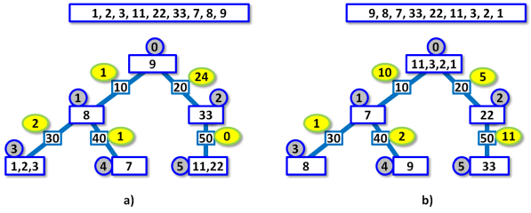

Dlouhodobé uskladňování boxů s chemikáliemi
Sklad tvoří skladové místnosti a chodby mezi nimi. Každá chodba spojuje právě dvě místnosti.
Sklad má jednu vstupní místnost, ze které jsou chodbami dosažitelné ostatní místnosti.
Každá chodba vede do některé místnosti a v té buď končí nebo pokračuje do další místnosti. Chodba se může take v některých místnostech dělit na dvě další chodby, které vedou do dalších dvou místností. Chodby se při vzdalování od vstupní místnosti pouze větví, nikdy se zase nesetkávají.
Celkově lze schéma skladu reprezentovat jako kořenový binární strom, kde místnosti představují uzly, chodby představují hrany a vstupní místnost představuje kořen stromu.
Do skladu se ukládají na dlouhodobé skladování explozivní chemikálie, které jsou baleny v tzv. boxech. S boxy ve skladu manipuluje speciální vozík, který přepravuje vždy pouze jeden box.
Při ukládání boxu do skladu vždy před skladem vozík naloží box, vjede do vstupní skladové místnosti a tam buď box složí nebo s boxem jede do některé další místnosti, složí box tam, a vrací se pak ihned ke vchodu do skladiště.
Přitom se nikdy s naloženým boxem nepohybuje chodbou zpět.
Dispečink operující vozíkem dodržuje další pravidla.
A. Když přijede naložený vozík do místnosti, ve které už nějaké boxy uloženy jsou, musí vozík svůj box složit v této místnosti a vrátit se prázdný ke vchodu do skladu. Vozík tedy může projíždět do dalších místností pouze skrz prázdné místnosti. Průjezd vozíku místností, kde už je jeden nebo více boxů, se považuje za potenciálně destabilizující pro uskladněné chemikálie, a je proto zakázán.
B. Vozík může složit box v prázdné místnosti. Tato místnost musí být ale zvolena tak, aby se nestalo, že jiná prázdná místnost ve skladu se stane pro vozík nepřístupnou díky pravidlu A.
Při ukládání zásilky více boxů se boxy jeden po druhém odebírají z přepravního vozidla před skladem a ukládají do skladu. Každý box může být uložen až poté, co byly uloženy předchozí boxy. Pořadí boxů je určeno přepravcem a musí být dodrženo.
Uskladněné boxy mají různou váhu a může jich být v různých místnostech různý počet.
Kvůli usnadnění pozdejších manipulací trvá dispečink na tom, že sumární váhy boxů v sousedních místnostech skladu musí být co nejpodobnejší. Vyvážením chodby nazývá dispečink absolutní hodnotu rozdílu mezi součtem vah boxů v místnosti na jednom konci chodby a součtem vah boxů v místnosti na druhém konci chodby. Vyvážením skladu nazývá součet vyvážení všech chodeb ve skladu.
Pohyb vozíku je ovlivňován profilem chodby, proto má každá chodba určenou takzvanou dobu průjezdu, což je doba, za kterou touto chodbou projede vozík naložený boxem, a nezáleží na váze boxu.
Doba průjezdu jednoho boxu je pak součet dob průjezdů všech chodeb, jimž vozík z boxem projede ze vstupní místnosti do místnosti, kde box uloží.
Doba ukládání zásilky je rovna součtu dob průjezdů všech boxů v zásilce.
Aktuálně je sklad prázdný po renovaci, očekává se příjezd nové zásilky boxů.
Dispečink chce organizovat ukládání boxů za dodržení uvedených pravidel tak, aby
po uložení zásilky byla hodnota vyvážení skladu co nejmenší. Pokud lze tento požadavek splnit vice způsoby, bude ukládání provedeno tak, aby doba ukládání zásilky byla co nejmenší. Lze počítat s tím, že kapacita každé místnosti postačuje k uložení libovolného množství boxů.
|

Obrázek 1. V obou schématech a) a b) jsou nahoře vyznačeny váhy jednotlivých devíti boxů které se ukládají do původně prázdného skladu schématicky naznačeného níže. V obou připadech jsou parametry prázdných skladů identické, odlišné hodnoty jsou způsobeny jen odlišným pořadím ukládaných boxů, vždy odleva v seznamu. Uzly představují místnosti, jejich označení je zakroužkováno na tmavším pozadí, váhy jednotlivých boxů v místnostech jsou vepsány v uzlech. Na hranách představujících chodby jsou vyznačeny doby průjezdu a zvýrazněny hodnoty (v elipsách) vyvážení chodeb. Schémata odpovídají jednomu z možných uložení boxů, která splňují požadavky dispečinku. Schémata ilustrují Příklady 1 a 2 níže. |
Úloha
Je dána topologie skladu a doby průjezdu jednotlivými chodbami. Dále jsou dány váha a pořadí boxů, které budou uloženy do původně prázdného skladu. Najděte takové uložení boxů do skladu, pro které je hodnota vyvážení skladu minimální. Pokud je takových možností více, vyberte tu nebo ty, které mají minimální dobu ukládání zásilky.
Vstup
První řádek vstupu obsahuje dvě čísla N a B, oddělená mezerou, představující počet místností ve skladu a počet boxů k uskladnění.
Další řádek obsahuje B čísel, oddělených mezerami, které představují váhy všech boxů, v tom pořadí, v jakém budou uskladněny.
Dále následuje N−1 řádku, každý specifikuje jednu chodbu mezi dvěma místnostmi. Místnosti jsou označeny čísly 0, 1, ..., N−1.
Každý řádek obsahuje nejprve dvě čísla sousedních místnosti spojených chodbou, pak dobu průjezdu chodbou. Jako první je pokaždé uvedeno číslo místnosti, která je blíže ke vstupní místnosti.
Čísla jsou na řádku oddělena mezerami.
Vstupní místnost skladu je vždy označena jako 0.
Platí: 2 ≤ N, B, ≤ 15. Všechny délky chodeb a všechny váhy boxů jsou kladná celá čísla nepřevyšující 1000.
Výstup
Výstup obsahuje jeden textový řádek s dvěma celými čísly oddělenými mezerou. První je rovno minimálnímu vyvážení skladu, kterého je možno dosáhnout při ukládání dané zásilky. Druhé je rovno minimální možné době ukládání zásilky, když je dosaženo minimálního vyvážení skladu.
Implementační poznámka
V předkládaných datech jsou všechny váhy boxů navzájem různé. To nemá zásadní vliv na postup řešení, ale může pomoci zpřehlednit proces ladění kódu, proto byla data volena takto.
Příklad 1Vstup6 9 1 2 3 11 22 33 7 8 9 0 1 10 0 2 20 1 3 30 1 4 40 2 5 50Výstup 28 340Data a řešení Příkladu 1 můžeme vidět na Obrázku 1a). |
Příklad 2Vstup6 9 9 8 7 33 22 11 3 2 1 0 1 10 0 2 20 1 3 30 1 4 40 2 5 50Výstup 29 190Data a řešení Příkladu 2 můžeme vidět na Obrázku 1b). |
Příklad 3Vstup6 6 37 23 11 7 5 2 0 1 5 0 2 100 1 3 5 1 4 5 2 5 100Výstup 39 40V obou optimálních uloženích boxů do skladu v Příkladu 3 zůstávají místnosti 0, 2 a 5 prázdné. |
Veřejná data
Veřejná data k úloze jsou k dispozici. Veřejná data jsou uložena také v odevzdávacím systému a při
každém odevzdání/spuštění úlohy dostává řešitel kompletní výstup na stdout a stderr ze svého programu
pro každý soubor veřejných dat.
Veřejná data